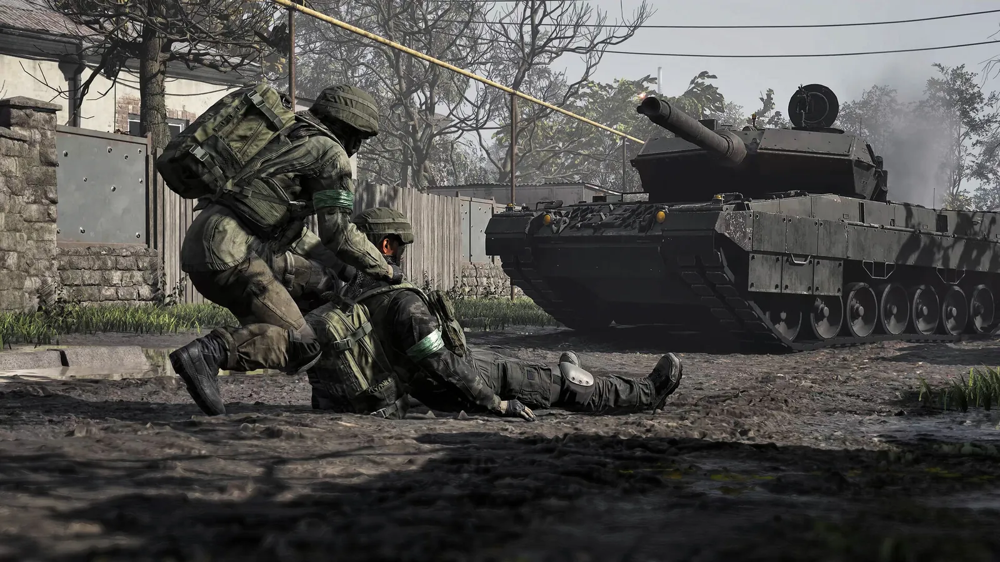
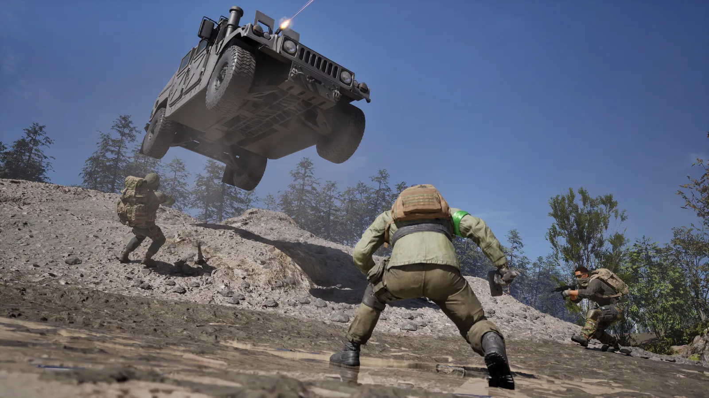

Last checked 14 Sep 2026 · Steam Early Access. Guides may change after patches.
WARDOGS Map Names & Objectives: Bakurani, Ozeti, Zestafona (EA)
TL;DR: This is an editorial WARDOGS map names and Control Zone objectives guide for Steam Early Access — not a MetaForge-style interactive map / map tool. Map names in the MetaForge hub capture (2026-09-13): Bakurani, Ozeti, and Zestafona (each listed Playable now). How you win: ~100 players / 3 teams, Control Zone ~2×2 km, first to 100 points (Steam store About, 2026-09-13). For clickable/filterable interactive maps, go to MetaForge. Play-area rotations and tower counts below remain dated third-party leads until match HUD screenshots. POI types: towers, settlements, industry, plus FOB/build space. Hot Zone double-cash (store) → Towers + Hot Zone. First-match checklist → How to Play. Cash rules → Economy.
Last checked 2026-09-16 (Early Access).

Match goals at a glance (store + press + indie framing)
| Rule | Store / press lead | Indie map-guide lead | Notes |
|---|---|---|---|
| Platform | PC Windows Steam Early Access (EA since Sep 10 2026) | — | Confirmed store |
| Players / teams | ~100 players, 3 teams (Steam store About + EA blurb, 2026-09-13) | ~33 per faction; Lonestar / Valkyra / Manticore (MetaForge 2026-09-13) | Store framing confirmed; lobby UI labels still public lead |
| Control Zone size | ~2×2 km (Steam store About, 2026-09-13) | Play area ~500–550 m radius; scoring core ~85 m (allthings) | Size conflict — store 2×2 km vs indie core; public lead — allthings for core |
| Win condition | First to 100 points (Steam store About, 2026-09-13) | Same | Store win condition confirmed; tick UI labels still public lead |
| Point ticks | Press/community often cite timed ticks | ~30 seconds; most bodies in zone (games.gg / allthings) | public lead — games.gg / allthings |
| Hot Zone | Store: double cash (Steam store About, 2026-09-13) | Double presence + extra cash (MetaForge + allthings + games.gg, 2026-09-13) | Cash = store fact; presence = public lead — MetaForge/allthings/games.gg agree |
| Persistence | Cash persists match to match (store) | Economy page | HUD |
Win-condition decision tree
Are you inside the active Control Zone scoring rules? NO → Reposition toward zone / team objective (HUD markers) YES → Is your team leading toward 100 pts? ├─ YES → Hold POIs, deny enemy ticks, don’t grief bankroll └─ NO → Contested POI (tower / settlement / industry) or Hot Zone plan
Need double cash? → Hot Zone path on./wardogs-towers-hot-zone/
Still learning spawns?./how-to-play-wardogs/Known maps: Bakurani / Ozeti / Zestafona (status + dated leads)
| Map name | In EA rotation? (dated lead) | UI label exact? | Notes / POI density lead | Last checked |
|---|---|---|---|---|
| Bakurani | MetaForge hub: Playable now (capture 2026-09-13) | public lead — MetaForge card title | River-valley; 3 play areas (allthings) | 2026-09-13 |
| Ozeti | MetaForge hub: Playable now (capture 2026-09-13) | public lead — MetaForge card title | Western Europe river basin; Control Zone rotates among four positions (MetaForge) | 2026-09-13 |
| Zestafona | MetaForge hub: Playable now (capture 2026-09-13; earlier “not yet in rotation” wording obsolete vs this capture) | public lead — MetaForge card title | North America river-bend (MetaForge); allthings guide also exists | 2026-09-13 |
| Other / renamed | public lead — older MetaForge “Kavkazi” naming | — | Confirm load-screen UI name in-match | — |
Bakurani play areas (allthings Sep 13, 2026)
| Play area | Position lead | Pick weight | Drill towers (dated) |
|---|---|---|---|
| Default | SW of centre | 2× (most common) | 5 |
| Farmland | N of centre | 1× | 5 |
| Lumberyard | SE of centre | 1× | 3 |
Terrain sketch (editorial, not a pin dump): apartments/residential, factory + containers, hill town + bridge, sunflower fields/church, lumber hills, market swamp, north river, scrub flanks. Overall towers table elsewhere cites 7 + 4 abandoned — conflicts with play-area 5/5/3; prefer play-area counts + live screenshot.
Approach tip (allthings): no respawn countdown — die → HQ; travel time is the tax. Valley road is fast and ambushed; budget transport (Economy).
Ozeti play areas (allthings Sep 13, 2026)
| Play area | In rotation? | Towers in radius (dated) | Character |
|---|---|---|---|
| Default | Yes (equal odds) | 4 | Town + stadium; busiest |
| Church | Yes | 3 | High ground under church |
| River | Yes | 2 | Greener NW; fewer code sources |
| Farmland | No — transit only | 1 tower cited in zone definition | Corridor, not objective host |
Battlefield span cited ~16.32 km; contested circle stays small. MetaForge: Control Zone rotates among four positions language vs allthings three-of-four — note as soft conflict on wording.
Zestafona (status caution)
Editorial deep dive → Zestafona map (completes Bakurani / Ozeti / Zestafona trio).
| Field | Dated lead | Status |
|---|---|---|
| Playability | MetaForge hub (2026-09-13 capture): Playable now (supersedes earlier “not yet in rotation” copy) | public lead — MetaForge; confirm via load screen |
| Towers | Discussed; counts unknown / unverified for live matches | Do not invent |
| Interactive tools | MetaForge / wardogstools / artillery maps may show terrain | Not a substitute for rotation proof |
Tower-count conflict table (maps ↔ towers page)
| Claim | Source | Conflict |
|---|---|---|
| Bakurani 7 (+4 abandoned) | allthings towers table Sep 12 | vs Bakurani guide 5/5/3 by play area Sep 13 |
| Ozeti 4 flat | allthings towers table | vs Ozeti guide 4/3/2 by play area |
| “3–5 towers” generic | games.gg beginner / tpose | Matches play-area variance better than flat 4 |
Full digit/keypad/drill flow → Towers. Do not paste contested tower counts as eternal facts.
Control Zone rules (what matters in a fight)
The Control Zone is the match’s scoring theater, not merely “the middle of the map.”
| Topic | Guidance | Notes |
|---|---|---|
| Store vs indie size | Store ~2×2 km vs ~85 m scoring core | Resolve with screenshot scale |
| Three-team pressure | Flank ≠ empty; third team may collapse your hold | Store 3-team framing |
| Verticality | Towers dominate sightlines (GameRant-class guides) | Live |
Control Zone presence checklist
- [ ] Locate zone edge markers on HUD/map
- [ ] Identify active play area name if shown
- [ ] Identify nearest friendly FOB / spawn logic
- [ ] Identify one tower, one settlement cluster, one industrial hardpoint
- [ ] Agree with squad: hold vs roam vs Hot Zone contest
- [ ] Watch score — leave ego fights that don’t buy ticks
Objective flow diagram
Match loads map (Bakurani / Ozeti / …)
→ Play area selected (weighted / equal odds)
→ Control Zone scoring core active
→ Hot Zone roams inside
→ Live towers in that area feed code digits
→ Keypad / FOB drill can pull Hot Zone
→ First faction to 100 match points wins
POI types: towers, settlements, industry
Editorial categories for callouts — not an interactive pin dump.
1) Towers
| Aspect | Public lead | This site’s home |
|---|---|---|
| Role | Hardpoint + digit toward drill code; pull Hot Zone | Towers + Hot Zone |
| Keypad / drill | Full digit set → pad → Hot Zone pull | Towers flowchart |
| Roof loot | Random helpful equipment (allthings) | Exposure risk |
| Why fight | Sightlines, AA, fortress with FOB | Live |
2) Settlements
| Aspect | Editorial note | Notes |
|---|---|---|
| Bakurani examples | Apartments, residential quarter, hill town | allthings |
| Ozeti examples | Residential pockets, shops, apartments/garages, stadium frontage | allthings |
| Why contest | Ambush lanes, spawn pressure, staging for towers | Live |
3) Industry
| Aspect | Editorial note | Notes |
|---|---|---|
| Examples | Factory + shipping containers; lumberyard stands; stadium complex | allthings |
| Why contest | Vehicle routes, long sightlines, build space | Live |
| Risk | Open yards punish poor armor choices | — |
| Link | Vehicle spend on Economy page | — |
4) FOBs / player-built space
| Aspect | Editorial note | Notes |
|---|---|---|
| vs tower drill | Public guides: FOB drills need fuel & can be destroyed; tower drills differ | Towers page |
| Spend | Building kits cost cash; FOB vendor price conflict $2.5k vs $7.5k | Economy conflict table |
| Site tip | Build into existing structures (church/stadium/tower) before activating pull | allthings oil |



Hot Zone vs Control Zone vs towers (one-screen summary)
Full flowchart lives on the Towers page; keep this editorial and short.
| Concept | Purpose | Cash / score impact |
|---|---|---|
| Play area | Which slice of the map hosts the zone this match | Changes which towers are live |
| Tower capture / hack | Digit toward code | Enables drill / Hot Zone pull per guides |
| Keypad + tower drill | Spend code to pull Hot Zone | Contest magnet |
| FOB drill | Alternate pull with logistics | Fuel / destroyable leads |
Control Zone (score to 100)
└─ POIs: towers | settlements | industry | FOBs
└─ Towers → digits → keypad → Hot Zone pull
└─ Hot Zone → double cash (store) + fights
First-match map orientation (10 minutes)
Use with How to Play:
- Read the map name on load — screenshot it.
- Identify play area if listed (Default / Farmland / Church / River / …).
- Open in-match map; find Control Zone outline.
- Ping one tower and one soft POI (settlement/industry).
- Buy ultra-budget kit — don’t empty bankroll (Economy).
- Arrive with ammo; die once learning lanes is cheaper than a vehicle YOLO.
- Only contest Hot Zone if squad + reserve allow.
- After match, note which POI actually moved the score.
What this page is not
| Not doing | Why |
|---|---|
| Interactive map clone | MetaForge / wardogstools / artillery calculators own that SERP shape |
| Weapon meta per map | Out of Batch-1 forever-best guns |
| Console map differences | Store focus PC EA |
| Copied POI pin coordinates | Editorial categories only |
Callout sheet template
Per-map callout sheets stay unpublished until we confirm live load-screen labels. MetaForge hub capture 2026-09-13 lists Bakurani, Ozeti, and Zestafona as Playable now. Store match framing: ~100 players / 3 teams, Control Zone ~2×2 km, first to 100 points.
Squad map callouts (editorial)
| Callout | Meaning |
|---|---|
| “Default Bakurani — five towers live” | Play area + tower density lead |
| “Church Ozeti — hold the climb” | Elevation objective |
| “River — only two towers, contest both” | Scarce code sources |
| “Farmland Ozeti is transit only” | Don’t stage the objective there |
| “Hot Zone sliding to factory” | Rotate bodies / defenses |
| “Ignore abandoned Bakurani towers” | Not code sources per allthings table |
| “Logi drop at stadium gate” | Named industry/settlement staging |
Map research hygiene (editors)
- Prefer dated play-area tables over undated “complete tower lists.”
- Keep MetaForge links as tools, never pasted pin dumps.
- When store ~2×2 km and indie ~85 m core both appear, publish both — do not silently pick one.
- Cross-link Towers for magnet/keypad; keep this page about where the fight is.
FAQ
Q: How big is the Control Zone and how do you win?
A: Steam store About (2026-09-13): about 2×2 km, first to 100 points, ~100 players / 3 teams. Indie guides describe ~500–550 m play areas with ~85 m scoring cores and ~30s ticks — size conflict kept as public lead (allthings/games.gg). Tick UI labels remain public lead until HUD screenshot.
Q: Are Bakurani, Ozeti, and Zestafona all in EA?
A: MetaForge hub capture 2026-09-13 lists Bakurani, Ozeti, and Zestafona each as Playable now (earlier “not yet in rotation” copy is outdated vs that capture). Still confirm the load-screen UI name in your match before treating any third-party pin dump as live.
Q: What POI types matter?
A: Towers (digits / Hot Zone pull), settlements, industry hardpoints, and player FOBs. Deep tower mechanics → Towers.
Q: How many towers on Bakurani / Ozeti?
A: Depends on play area. Dated leads: Bakurani 5/5/3; Ozeti 4/3/2. Flat “7” or “4” tables conflict — screenshot your match.
Q: Is this an interactive map / map tool?
A: No. This page is an editorial map-names and Control Zone objectives guide only — not a clickable/filterable map tool. For interactive layers, use MetaForge.
Q: Does Hot Zone change the map?
A: It changes where the fight and cash multiplier concentrate. Pull/hold rules → Towers page; cash → Economy.
Q: Where should a new player go first?
A: Soft POI or team-tagged objective edge — not solo tower keypad. See How to Play.
Q: Do maps affect starter loadout?
A: Indirectly (range vs CQB; transport budget on large travel). Keep first kits budget-safe until you know the lane — Economy page.
Q: PC only?
A: This hub targets Steam PC EA per store. Console wishlist chatter is out of scope here.
Also read
- Bakurani map (editorial) · Ozeti map · Zestafona map — map spokes
- WARDOGS Towers + Hot Zone — digits, keypad, drills, double cash
- How to Play WARDOGS (First Match) — first 30 minutes
- WARDOGS Economy + Starter Loadout — $10k journey, reserve rule, FOB price conflict
- Best WARDOGS Settings — clarity for long sightlines
Sources
- Steam store WARDOGS — Control Zone / 100 players / 3 teams / Hot Zone cash / PC EA Sep 10 2026 — https://store.steampowered.com/app/1867240/WARDOGS/
- allthings.how — Bakurani play areas (Sep 13, 2026) — https://allthings.how/wardogs-bakurani-every-play-area-and-how-to-hold-the-control-zone/
- allthings.how — Ozeti play areas (Sep 13, 2026) — https://allthings.how/wardogs-ozeti-map-play-areas-drill-towers-and-the-control-zone/
- allthings.how — Towers / Hot Zone (Sep 12, 2026) — https://allthings.how/wardogs-towers-how-to-capture-them-and-move-the-hot-zone/
- allthings.how — Zestafona guide — https://allthings.how/wardogs-zestafona-map-guide-to-every-play-area-and-the-control-zone/
- MetaForge — Interactive maps hub — https://metaforge.app/wardogs/map
- GameRant — Towers / hack / drill (Sep 12, 2026) — https://gamerant.com/wardogs-how-capture-hack-towers-work/
- GameWatcher — Towers overview (bot-walled 2026-09-13) — https://www.gamewatcher.com/wardogs/towers-what-they-are-and-how-to-capture-them
- PC Gamer — launch population / server context — https://www.pcgamer.com/games/fps/wardogs-servers-go-down-as-over-300-000-people-rush-to-play-on-launch-day/